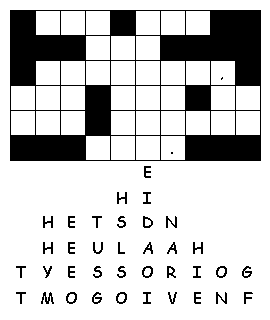
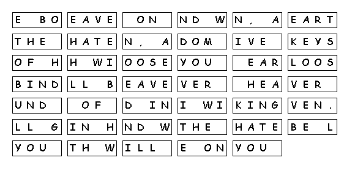

This week's lessons:Exodus 1:8-2:10 and Psalm 124 or Isaiah 51:1-6 and Psalm 138 Romans 12:1-8 Matthew 16:13-20
This
week's lessons:Exodus
1:8-2:10 and Psalm
124 or Isaiah
51:1-6 and Psalm
138 Romans
12:1-8 Matthew
16:13-20
Elementary School Pew-work
R H B P M Y W T G
|
(Matthew 16:18 NRSV) And I tell you, you are Peter, and on this rock I will build my church, and the gates of Hades will not prevail against it. |
Word List |
from http://www.efree.mb.ca/lectionarypuzzles free to distribute for free with this notice. Words are in a straight line left to right or top to bottom |
||
1.
What did Jesus
ask his
disciples?
_____________________________________________________________
2. Who answered
him?
_____________________________________________________________
3. What did Peter
say?
_____________________________________________________________
4.
What is the rock
that the church is built
on?
_____________________________________________________________
Questions taken from Sunday School Lessons; http://www.sundayschoollessons.com/baplord.htm


Created
by Puzzlemaker
at DiscoverySchool.com
Next week: Exodus 3:1-15 and Psalm 105:1-6, 23-26, 45c or Jeremiah 15:15-21 and Psalm 26:1-8 Romans 12:9-21 Matthew 16:21-28